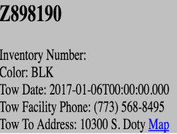
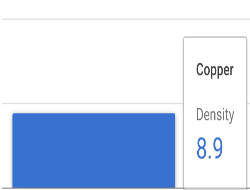
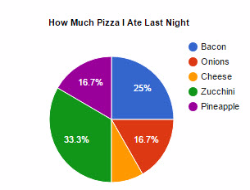
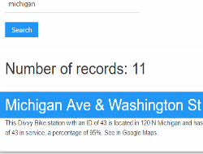
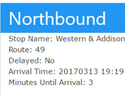
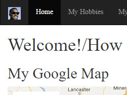

Activity: Cloning
In this activity, I explored the idea of using cloning to help display data returned from an API. It's very simple in concept.


Lab: Bar Chart
This chart shows the densities of various metals using the Google Charts API.

Pie Chart
This is a pie chart made with the Google Charts API. It showcases the music that I listen to.

Project: Divvy Bike Station Finder
This is a full project I completed. The user interface lets you type in a street name. With the street name, the app will show you Divvy bike stations on that street. It involves professional visualization and AJAX calls to the Chicago Data Portal Socratic Open Data API.

Project: CTA Bus Tracker
This project is a CTA bus tracker. It tracks the buses that stop at the intersection of North Western Avenue and West Addison Avenue. As input, you select a bus from the dropdown menu. Once pressing the button to search, either two or four different sections, each labeled a direction, will show details about each bus, including how many minutes until it stops at the intersection. It involves a professional user interface, a manifest, and AJAX calls to the CTA Bus Tracker API.

Project: About Me
This is the very first full website I made for this class. It is a full website about me. It includes Bootstrap, a Google map from their API, and many audio clips.